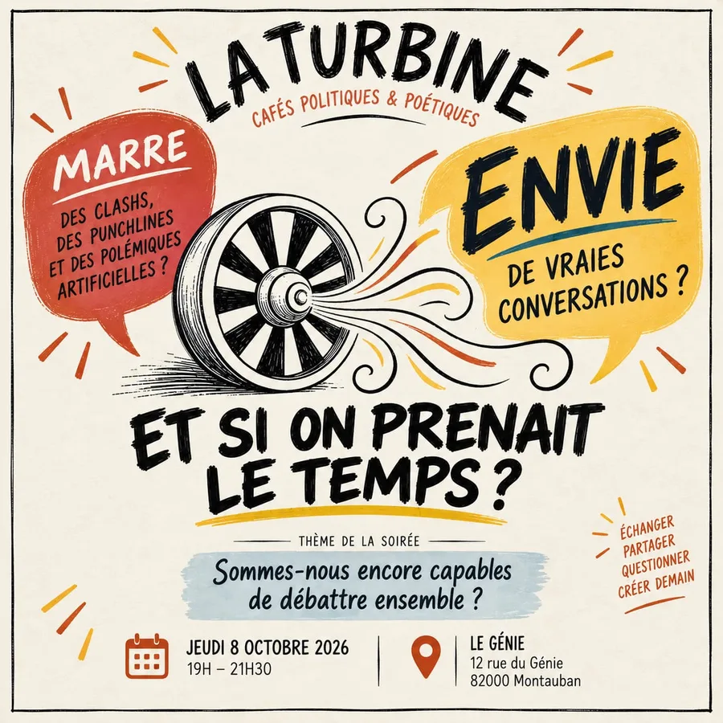

Le principe
Une turbine transforme une énergie en mouvement. La Turbine transforme les idées, les désaccords et les expériences de chacun en réflexion collective, en compréhension et, pourquoi pas, en projets.
Une soirée, pas à pas
- AccueilOn s’installe, on se sert un café ou un thé.
- Présentation de La Turbine et de la questionL’association, son cadre, et pourquoi ce sujet.
- Baromètre de départOù en suis-je avant d’avoir entendu les autres ?
- L’invité·e prend la paroleUn éclairage, un témoignage, une expérience.
- La discussionAnimée, avec la parole distribuée, des relances, des temps de silence.
- Baromètre de finQu’est-ce qui a bougé, ou pas ?
- Conclusion et prochain rendez-vousCe qu’on a compris, ce qui reste discuté.
- Moment convivialOn continue la conversation autour d’une boisson.

Chaque séance garde le même cadre mais peut changer de méthode : cercle de parole, petits groupes, world café, atelier de propositions…
La charte du débat : nos huit engagements
La Turbine accueille des opinions diverses sans chercher à fabriquer un consensus artificiel. La charte garantit un débat libre, argumenté, inclusif et compatible avec la sécurité des personnes.
- Nous discutons des idées, des faits et des propositions, jamais de la dignité des personnes.
- Nous laissons finir une intervention avant de répondre.
- Nous distinguons clairement fait vérifiable, expérience vécue, interprétation et opinion.
- Nous acceptons le désaccord et reformulons loyalement le point de vue différent.
- Nous donnons une place aux personnes qui parlent peu.
- Nous refusons les propos haineux, discriminatoires, diffamatoires ou incitant à la violence.
- Nous respectons la liberté de conscience, la laïcité et l’indépendance de La Turbine.
- Nous ne transformons pas la rencontre en meeting, en opération de prosélytisme ou en campagne électorale.
Le rôle de l’animation
L’animateur ou l’animatrice présente la question, rappelle le cadre, distribue la parole, protège les temps de silence et synthétise les accords, les désaccords et les questions ouvertes. Iel ne tranche pas le débat et ne défend pas de position personnelle pendant la séance.
Pour que chacun·e trouve sa place : cartes de parole (« fait », « expérience », « question », « proposition »), tour de météo en début et en fin de séance, temps de parole visible, mur de synthèse en trois colonnes (accords, désaccords, pistes).
Formule d’ouverture
« La Turbine est un espace indépendant et pluraliste. Nous ne cherchons pas à gagner le débat, mais à mieux comprendre. Vous pouvez parler, écouter ou passer votre tour. Nous discutons des idées, pas des personnes. »